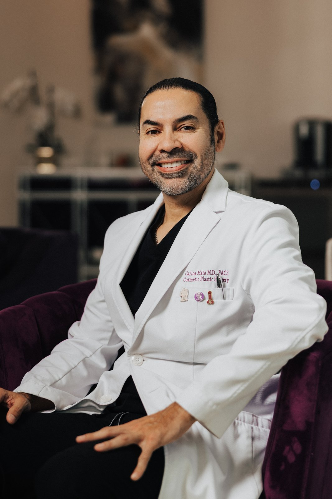
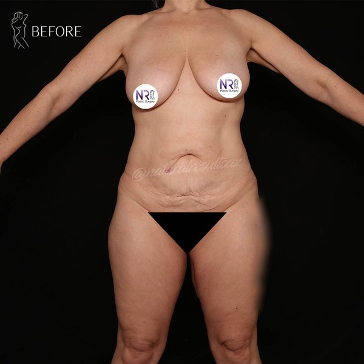
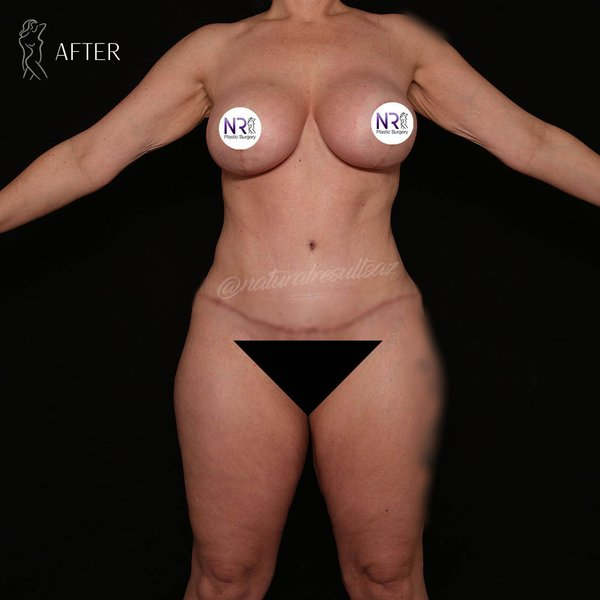
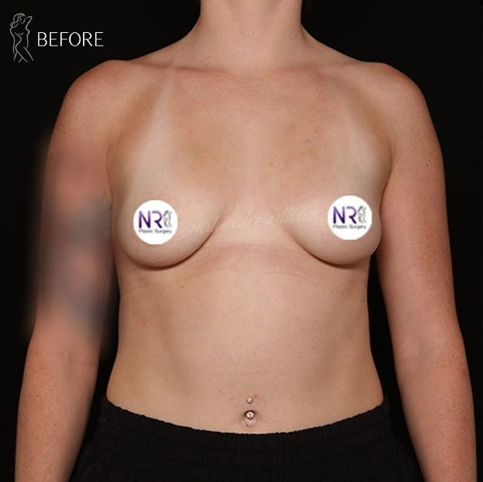
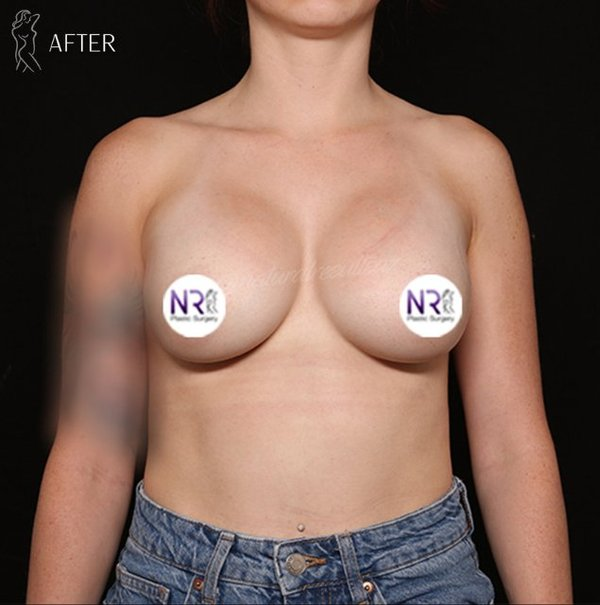

— a.k.a. Dr. Carlos Mata
Board-certified plastic surgeon in Scottsdale, Arizona. Creator of the Scottsdale Skinny®, Gladiator® male makeover, and Magic Shot®. 25,000+ procedures — one of the most followed plastic surgeons on social media for a reason.
Independently verified by the nation's most rigorous physician evaluation organizations. Recognitions awarded strictly on merit, peer recommendation, and clinical outcomes — cannot be purchased.
Named by Newsweek for Facelift, Breast Augmentation, and Liposuction — based on 8,400+ peer votes from 2,000+ medical experts nationwide.
Recognized continuously since 2018. Only the top 1% of physicians in the U.S. receive this honor — selected through peer nomination and extensive credentialing review.
Cannot be purchased. Not influenced by advertising.
Verify on Castle ConnollyAwarded based on consistently high patient ratings and verified reviews from real patients.
American Board of Physician Specialties. Fellow of the American College of Surgeons.
Top Doctor recognized continuously since 2018 — top 1% nationwide.
Three trademarked procedures only performed by Dr. Scottsdale — developed, refined, and registered through thousands of cases.
High-definition body sculpt. Vaser lipo 360 + targeted fat transfer + muscle etching — full-body transformation in one session.
Learn MoreThe male makeover. High-definition chest, abdomen, and flank sculpting with optional enhancement — designed exclusively for men.
Learn MoreNon-surgical penile enhancement using injectable fillers. Discreet, in-office, no downtime. The alternative to surgical phalloplasty.
Learn MoreDr. Carlos Mata — Dr. Scottsdale® — is a Harvard-trained, board-certified plastic and reconstructive surgeon based in Scottsdale, Arizona. Over the last 15 years he's performed more than 25,000 cosmetic procedures, developed three trademarked techniques, and built one of the largest social followings in plastic surgery.
Patients fly to Scottsdale from across the country specifically to be operated on by him. His Instagram has over 550K followers. His TikTok over 450K. Newsweek named him among America's Best Plastic Surgeons three years running.
Real surgical outcomes from Dr. Scottsdale's practice. Each patient consented to share their journey.




AI assistant trained on Dr. Scottsdale's procedures, recovery, philosophy, and pricing. Get real answers about Scottsdale Skinny®, Gladiator®, Magic Shot®, or anything else — instantly, no scheduling required.
Hello — I'm Dr. Scottsdale's AI. I can answer questions about procedures, recovery, financing, and what to expect at a consultation. What would you like to know?
Virtual ($300), in-person ($500), or start with a free Patient Care Coordinator orientation.